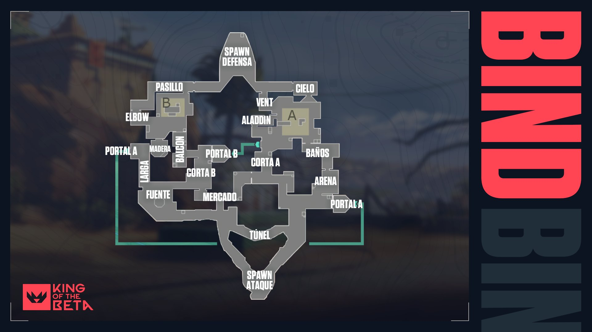
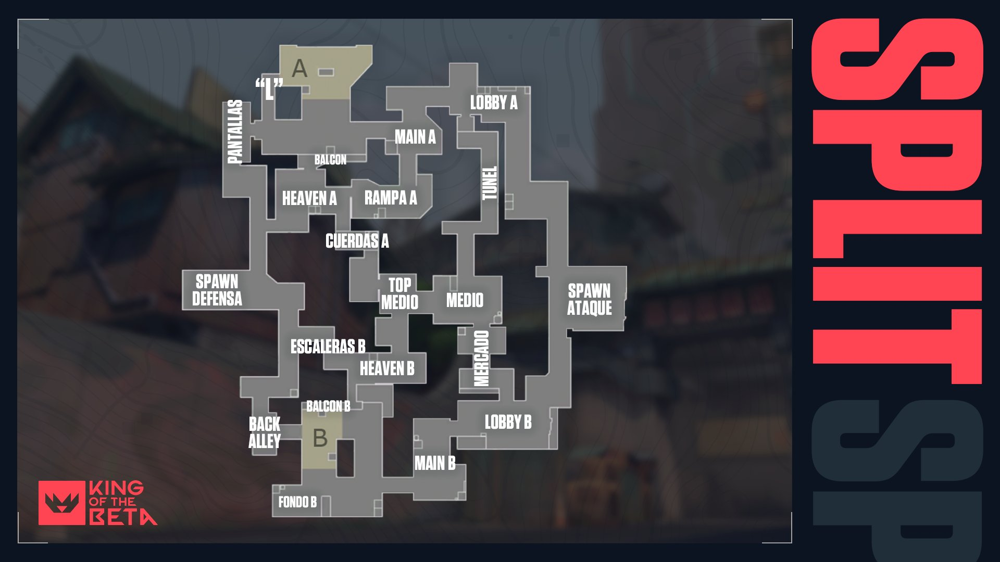

Haven es el mapa más grande y complejo de Valorant. Está ambientado en un pueblo de estilo japonés medio destruido, con unas cuantas calles estrechas y plazas abiertas. Y es el único mapa que cuenta con 3 emplazamientos para plantar la spike, lo que hace que sea difícil de defender y versátil de atacar.
Por todo esto, la comunicación y el trabajo en equipo es esencial en Haven. A favor tenemos que las zonas clave están bastante cerca las unas de las otras, por lo que el desplazamiento se vuelve genuino y la acción frenética (sobre todo por algunos puntos ciegos importantes).

Bind es un mapa ambientado en una ciudad de arquitectura árabe con varios pasillos y callejuelas, además de contar con las instalaciones de unos laboratorios y unos pocos puntos altos que dan ventaja de altura. Pero lo más interesante de este mapa es que es el único que posee dos portales de teletransporte unidireccional con los que movernos rápidamente entre ubicaciones.
Debido a sus características,es un mapa muy favorecedor para el equipo de los defensores, y difícil para los atacantes, que solo tienen dos zonas para plantar la spike. Precisamente los portales pueden hacer que los defensores pillen desprevenidos a los atacantes por la espalda, así que se recomienda estar muy atento al sonido que estos producen.

Icebox se trata de un mapa gélido que nos sitúa en una excavación secreta en el Ártico, con dos plantas de metal y algunas tirolinas horizontales situadas por el escenario, lo que aplica cierta verticalidad al juego en esta zona.
Hay dos zonas para plantar la Spike (en dos alturas distintas), pero no por ello este mapa es simple, ya que ofrece muchísimos ángulos desde los que atacar y defender y es, con mucho, uno de los mapas más complejos.
Ascent es un mapa ambientado en Italia, más en concreto una ubicación que recuerda a la ciudad de Venecia. Aunque en este caso se trata de una ciudad flotante con canales y algo muy interesante; algunas paredes destructibles y puertas que se pueden abrir y cerrar.
Este mapa dispone de tres caminos principales y una gran zona central abierta, desde la que se puede recorrer cuatro rutas de flanqueo hacia los emplazamientos A y B. Además Ascent es un mapa con cierta verticalidad, más pronunciada que en los demás.
Split puede resultar un mapa algo laberíntico de entrada, pero termina siendo fácil de entender, sobre todo si vienes de juegos como League of Legends ya que tiene 3 carriles principales, uno en el centro y dos a cada lado que llevan a los emplazamientos de la spike.
Este mapa está ambientado en los bajos fondos de una ciudad oriental con edificios modernos y de corte tradicional y cuenta con algunos pasajes subterráneos y muchas esquinas donde esconderse. Los defensores tienen una ligera ventaja frente a los atacantes ya que a estos les costará más transitar por los lugares y moverse de un lado a otro puede ser algo lento.

Cada mapa tiene sus cosas, Haven tiene tres sitios de plantacion, Bind tiene teletransportadores. Pero en todos y cada uno de ellos exiten ciertas "configuraciones" del como usar las habilidades de un personaje en concreto.
Por ejemplo: Donde poner los clables y trampas de Cypher, donde poner las torreta, el alarmbot y las granadas de enjambre y para Sova, cuantos rebotes y en donde lanzar la flecha de reconocimieto o la flecha de choque, claro eso seria cosa ya de mainear a uno de ellos tres y saber usarlos o simplemente ver tutoriales